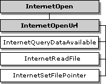

This section contains information about the handles that are used by the WinINet functions and the hierarchy in which they work.
The handles that are created and used by the WinINet functions are of type HINTERNET. The WinINet functions return HINTERNET handles that are not interchangeable with other handle types. Therefore, they cannot be used with functions such as ReadFile or CloseHandle. Similarly, other handle types cannot be used with the WinINet functions. For example, a handle returned by CreateFile cannot be passed to InternetReadFile.
The InternetCloseHandle function closes handles of type HINTERNET. Note that handle values are recycled quickly; therefore, if a handle is closed and a new handle is generated immediately, there is a good chance that the new handle has the same value as the handle just closed.
The HINTERNET handles are maintained in a tree hierarchy. The handle returned by the InternetOpen function is the root node. Handles returned by the InternetConnect function occupy the next level. Handles returned by the FtpOpenFile, FtpFindFirstFile, and HttpOpenRequest functions are the leaf nodes.
Windows XP and Windows Server 2003 R2 and earlier: Handles returned by , GopherOpenFile, and GopherFindFirstFile are also leaf nodes.
The following diagram illustrates the hierarchy of the HINTERNET handles. Each box in the diagram represents a function that returns an HINTERNET handle.
At the top level is the InternetOpen function, which creates the root handle. The next level contains the InternetOpenUrl and InternetConnect functions. The functions that use the handle returned by InternetConnect make up the last level.
The following diagram shows the functions that are dependent on the handle created by InternetOpenUrl. The shaded boxes represent functions that return HINTERNET handles, while the plain boxes represent functions that use the HINTERNET handle created by the associated function.

The InternetQueryDataAvailable, InternetReadFile, and InternetSetFilePointer functions use the HINTERNET handle created by InternetOpenUrl.
The following diagram shows the FTP functions that are dependent on the FTP session handle returned by InternetConnect. The shaded boxes represent functions that return HINTERNET handles, while the plain boxes represent functions that use the HINTERNET handle created by the function on which they depend.

The FtpCreateDirectory, FtpDeleteFile, FtpGetCurrentDirectory, FtpGetFile, FtpPutFile, FtpRemoveDirectory, FtpRenameFile, and FtpSetCurrentDirectory functions all use the HINTERNET handle created by InternetConnect.
The following diagram shows the two FTP functions that return handles and the functions that are dependent on them. The shaded boxes represent functions that return HINTERNET handles, while the plain boxes represent functions that use the HINTERNET handle created by the function on which they depend.

The InternetFindNextFile function is dependent on the handle created by FtpFindFirstFile, while InternetReadFile and InternetWriteFile use the handle created by FtpOpenFile.
The following diagram shows the relationships of the functions that are used for the HTTP protocol. The shaded boxes represent functions that return HINTERNET handles, while the plain boxes represent functions that use the HINTERNET handle created by the function on which they depend.

The HttpAddRequestHeaders, HttpQueryInfo, HttpSendRequest, HttpSendRequestEx, and InternetErrorDlg functions are dependent on the handle created by HttpOpenRequest.
The following diagram shows the functions that use the HINTERNET handle created by HttpOpenRequest after it is sent by HttpSendRequest. The shaded boxes represent functions that return HINTERNET handles, while the plain boxes represent functions that use the HINTERNET handle created by the function on which they depend.

After HttpSendRequest has used the handle returned by HttpOpenRequest, it can be used by InternetQueryDataAvailable, InternetReadFile, and InternetSetFilePointer.
After HttpSendRequestEx has used the handle returned by HttpOpenRequest, the handle can be used by HttpEndRequest, InternetReadFileEx, and InternetWriteFile. After HttpEndRequest has been called, the handle can be used by InternetReadFile, InternetSetFilePointer, and InternetQueryDataAvailable.
[!Note]
WinINet does not support server implementations. In addition, it should not be used from a service. For server implementations or services use Microsoft Windows HTTP Services (WinHTTP).
Â
Â
Â